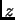

The Set Viewpoint... menu entry opens a submenu pane. Select Explicit... to open a dialog that lets you specify the view point in great detail.
In the dialog are given four text fields, labeled ''Phi'', ''Theta'', ''Chi'', and ''Eye'' The first three fields show anglular values (in deg) that are used to rotate the set of atoms to be rendered. The rotation is based on Euler angles phi, theta, chi: First the set is rotated about its z-axis by phi degrees. Then the set is rotated about its new y-axis by theta degrees. Then the set is rotated about its new z-axis by chi degrees.
The text field labeled ''Eye'' is used to adjust the distance from the view point to the set.
The setting is effective after Apply or Done is pressed.
Choose Default View to assume the view parameters defined as default. Alternatively, choose View XY+ to view along the positive -axis, View XY- to view along the negative -axis, and so on.